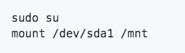
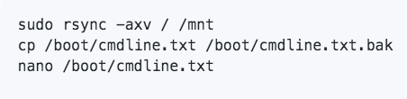
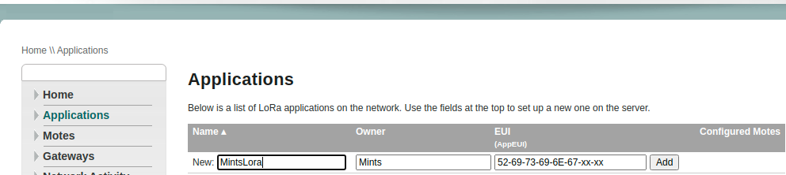
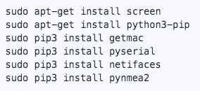

Central Hub
Lora Module
Setting Up The External Hard Drive
1. Check if the hard drive is connected

The output should look like this:

Make sure that the hard drive you would like to use is formatted in the ext4 filesystem.
2. Mount The Hard Drive

3. Transfer Your Root Partition To The New Drive:

Change the lines as follows:

4. Change The Boot Order:

Add The Following Line (while making sure to get the spacing right):

Comment the SD Boot:

Restart The System
Registering Lora Nodes
1. On your browser, type in the ip address of the Lora Gateway (Rasberry Pi)
2. Go to the application tab and create an application under the credentials given below

3. Under the application created, click on the table icon. Here you can register your Lora Nodes:

Jetson
Pi
Install Dependencies
Edit Crontab With Nano
export VISUAL=nano; crontab -e
Jetson

Crontab

LoRaWAN Gateway:
This kit provides all the basic tools needed to collect and transfer data among all your LoRa nodes.

Dimensions: 200mm x 130mm x 50mm
| Parts | Quantity | Details |
| Raspberry Pi 3 | 1 | Details |
| Seeeduino LoRaWAN with GPS | 1 | Details |
| Gateway module RHF0M301 – 868 | 1 | - |
| PRI 2 Bridge RHF4T002 | 1 | - |
| 8GB Micro SD Card – Class 10 | 1 | - |
| USB to UART Adapter | 1 | - |
| 0dBi Rubber Duck Antenna | 1 | - |
| Micro USB Cable 20cm | 1 | - |
| Micro USB Cable 100cm | 1 | - |
| RJ45 Ethernet Cable 100cm | 1 | - |
| 5V/2.1A American Standard Adapter with Micro USB Connector | 1 | - |
Jetson Nano Developer Kit:
NVIDIA® Jetson Nano™ Developer Kit is a computer that lets you run multiple neural networks side by side for applications like image classification, object detection, segmentation, and speech processing.

CPU: Quad-core ARM A57 @ 1.43 GHz
Items Included:
Jetson Nano Developer Kit
Small paper card with quick start and support information
Folded paper stand
WD 1TB Portable External Hard Drive:
WD External HD is a portable harddrive in which you can store massive amounts of files, inculding photos, videos, and music.

Interface: USB 3.0/2.0
Dimensions: 4.33in x 3.21in x 0.64in
WIWAV 5 Port Switch:
WIWAV's 5-Port Switch is a low power consumption device that series up to 5 Ethernet devices for critical applications in hazardous environments, such as smart traffic, factory automation, and outdoor access connection for video surveillance / FTTx and Wi-Fi coverage.

Interface: 5 x RJ45
Transmission Speed: 10/100Mbps
Dimensions: 28mm x 118mm x 89mm
Range of Operating Temperatures: -30°C ~ +75°C